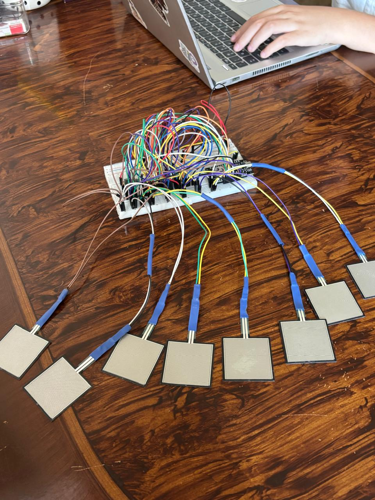

Early digital foot screening
Early foot screening for every child.
SoleShift Kids is a foot-pressure screening platform. A child stands on a plate fitted with eight pressure sensors; we record how the foot contacts the surface and how load is distributed, and turn it into a structured report for an orthopedic specialist to assess. A screening tool, not a medical diagnosis.
Screening only · Parental consent required · Anonymized by default
The problem
Cheap to catch early. Expensive to catch late.
- Screening is rare and mostly manual.
- Results are subjective and rarely recorded over time.
- Families rarely get referred at the right time.
Scope, stated plainly
What SoleShift Kids is — and is not.
What it is
- Pressure-based screening: foot contact and load distribution.
- An automatic, readable report.
- Tracks change over time.
- Routes families to partners, with consent.
What it is not
- Not a medical diagnostic device.
- Doesn't name conditions or treat.
- Doesn't manufacture insoles — partners do.
- No data stored without consent.
- Not a 3D scanner — it doesn't measure foot shape.
Screening ≠ Diagnosis
How it works
From pressure plate to specialist in five steps.
Pressure measurement
The child stands on the plate; eight sensors record contact and load.
Quality control
Each session is checked for a stable, complete reading before it's kept.
Structured report
Load per foot region, in a format a specialist can assess.
Specialist assessment
An orthopedic specialist reviews the data and decides — not the software.
Families and next steps
Families are informed; where recommended, partners make custom insoles.
Results to date
What has actually happened.
Figures from the project documentation, reviewed by our scientific supervisor, Dr. Aydin Gahramanov (letter of 17 May 2025).
Reach
- 10 implementation sites 8 rural schools and 2 orthopedic centers
- 602 unique participants including 473 students from rural schools
- 328 measurement sessions conducted
Specialist pathway
- 276 participants' data reviewed by orthopedic specialists
- 216 participants recommended custom orthopedic insoles
- 173 pairs of insoles produced and delivered through partner organizations
Education and capacity
- 1,570 students, parents and educators reached through foot-health education sessions
- 105 local coordinators and site staff trained in running sessions, recording data and referral
- 4 partner organizations in manufacturing and logistics
These figures confirm documented project activity. They are not a clinical validation, a medical device certification or regulatory approval.
Prototyping
Built and tested by hand, iteration by iteration.
Eight force-sensing pads, laid out in the shape of a foot, report how much load each region of the sole places on the plate. That gives the contact pattern and the pressure distribution across heel, midfoot and forefoot, and between left and right. The hardware does not capture the foot's 3D shape, so it does not measure foot length, width or arch height.

Behind the project
In the field
The people who helped shape SoleShift Kids, and the children it's built for.
Dr. Aydin Gahramanov — Doctor of Medical Sciences, Head of the Department of Adult Traumatology and Orthopedics at the Scientific Research Institute of Traumatology and Orthopedics, Chair of AO Trauma Azerbaijan and SICOT National Delegate for Azerbaijan — served as the project's scientific supervisor and personally reviewed the prototype.
We showed the prototype to a school class: how it works, what it measures, and what it doesn't. Photos are published with written parental consent; no names are shared.
A second demonstration with a younger class: students lifted the lid, looked at the wiring and held the sensor pads themselves. Photos are published with written parental consent; no names are shared.
We also brought the prototype to senior students and let them try it hands-on. Photos are published with written parental consent; no names are shared.
Sample report
A structured report, assessed by a specialist.
- Heel load44 %
- Midfoot load7 %
- Forefoot load49 %
- Left / right balance53 / 47
- Pads in contact8 / 8
- Quality checkPassed
Not a diagnosis — the specialist decides whether anything, such as custom insoles, is needed.
Pressure readings only, no 3D shape. A rule-based measurement pipeline — described honestly, not sold as "diagnostic AI".
Privacy and consent
Children's data, handled carefully.
-
Consent firstNo measurement without written parental consent.
-
Anonymized by defaultStored under an ID, not a name.
-
Second consent to shareA separate permission to forward a report.
-
Parents can withdrawConsent revoked, data deleted, any time.
Who this is for
Three audiences, one system.
For schools
A screening day with minimal disruption. We bring the equipment, the consent forms, and the reports.
Host a screening dayFor clinics and manufacturers
Receive structured, consented foot-pressure data instead of hand-measured guesses.
Become a partnerFor parents
Understand how your child's foot carries load, and know when it's worth seeing a specialist.
See a sample reportLearn more
The project, in full.
A closer look at the concept, the plan, and the people behind SoleShift Kids.
SoleShift Kids is an engineering and public-health project that supports accessible primary foot-health screening, orthopedic specialist assessment and referral for students and families, including in rural communities. Its platform uses pressure sensors to record how the foot contacts the surface and how pressure is distributed; the data is turned into a structured digital report for specialist assessment.
It is not a medical diagnostic system, and it does not manufacture insoles. Where a specialist recommended custom insoles, they were produced and delivered through partner organizations.
A report can be forwarded to these organizations, always with a separate parental consent — they decide independently what, if anything, to offer the family.
- 01 · Prototype — an enclosed eight-pad pressure platform, built and calibrated. Done.
- 02 · Field work — 8 rural schools and 2 orthopedic centers, 328 measurement sessions. Done.
- 03 · Specialist pathway — 276 participants reviewed by orthopedic specialists, 173 insole pairs delivered through partners. Done.
- 04 · Next — more schools, more regions, more rural medical centers.
Each stage only starts once the previous one is real, not planned.
- Screening, not diagnosis — the report suggests a specialist visit, it never names a condition.
- Parental consent, always — no measurement without it, no sharing without a second, separate consent.
- Data protected — anonymized by default, no child's face published without written parental consent, deletable on request.
- Real numbers only — every figure on this site is something that actually happened.
- Honest about the AI — if it's a rule-based measurement pipeline, that's what we call it.
- Partners treat, we don't — SoleShift Kids builds the referral infrastructure, not the treatment.
Team
The people building SoleShift Kids.
Ilys Taghiyev
Measurement software, data validation and digital reporting; trains others to use the device.
Youssef El Haroun
Electrical prototype, system integration and the service process.
Vahid Musayev
Mechanical design, stability and durability of the platform.
Jeyla Ahmadzada
Screening methodology and coordination with orthopedic specialists.
Mikayil Ahmadbayli
Sensor circuits, calibration and analysis of foot biomechanics.
Scientific supervisor: Dr. Aydin Gahramanov, Doctor of Medical Sciences.
FAQ
Questions, answered plainly.
No. It's a screening and referral system — it doesn't diagnose, treat, or replace a specialist.
The parent, first and always. A partner only sees a report with a separate, explicit consent.
Yes, at any time. Consent can be withdrawn and data deleted on request.
No. Where an orthopedic specialist recommends custom insoles, partner organizations produce and deliver them — 173 pairs so far.
No. The platform has eight pressure sensors. It records where and how hard the foot presses on the plate — the contact pattern and pressure distribution. It does not measure the foot's 3D shape.
SoleShift Kids is an early screening and referral system. It does not provide medical diagnosis or treatment, and does not replace consultation with a qualified specialist.